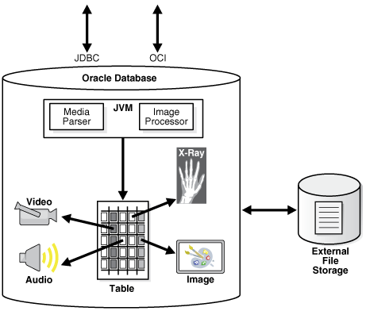

1 Introduction to Oracle Multimedia
This chapter provides an overview of Oracle Multimedia.
Oracle Multimedia (formerly Oracle interMedia) enables Oracle Database to store, manage, and retrieve images, audio, video, or other heterogeneous media data in an integrated fashion with other enterprise information.
Oracle Multimedia extends Oracle Database reliability, availability, and data management to multimedia content in traditional, medical, Internet, electronic commerce, and media-rich applications. Oracle Multimedia does not control media capture or output devices; this function is left to application software.
Oracle Multimedia provides these services and support:
-
Image services for the storage, retrieval, metadata extraction, and processing of two-dimensional, static, bit-mapped images. Images are stored efficiently using popular compression schemes in industry-standard image formats for desktop publishing.
-
Digital Imaging and Communications in Medicine (DICOM) support for the storage, retrieval, metadata extraction, processing, writing, conformance validation, and making anonymous of medical images and other DICOM content.
Note:
DICOM support was deprecated in Oracle Database 12c Release 2 (12.2), and may be desupported in a future release.
-
Audio and video services for the storage, retrieval, and metadata extraction of popular audio and video file formats.
This chapter includes these sections:
See Also:
-
Oracle Multimedia Reference for detailed information about Oracle Multimedia APIs and their components
-
Oracle Multimedia DICOM Developer's Guide for more information about Oracle Multimedia DICOM support
1.1 Object Relational Technology
Oracle Database is an object relational database management system that provides support for multimedia data stored in BLOBs and BFILEs as well as in Oracle Multimedia object types.
In addition to its traditional role in the safe and efficient management of relational data, Oracle Database provides support for the safe and efficient storage and management of large objects (LOBs) using SecureFiles LOBs.
Oracle Multimedia provides four PL/SQL packages, which contain functions and procedures for managing image, audio, and video data stored in binary large objects (BLOBs) and external large objects (BFILEs) in Oracle Database:
-
ORD_AUDIO for audio data
-
ORD_DOC for heterogeneous data
-
ORD_IMAGE for image data
-
ORD_VIDEO for video data
In addition, Oracle Multimedia provides the ORD_DICOM PL/SQL package to support DICOM content produced by medical devices.
Developers can use the PL/SQL packages to include common operations, such as these, in their applications:
-
Creating thumbnail images
-
Cropping images
-
Converting images into Web-friendly formats
-
Extracting information from multimedia data, either as an XML string or as XML and individual attributes
-
Loading multimedia data from operating system files into Oracle Database
-
Exporting multimedia data from Oracle Database into operating system files
Oracle Database also supports the definition of object types, including the data associated with objects and the operations (methods) that can be performed on them. Complex objects include: digitized audio, image, video, and Digital Imaging and Communications in Medicine (DICOM) format medical images and other data.
Oracle Multimedia provides four object relational types, which store data source information in an object relational type known as ORDSource:
-
ORDAudio, for audio data characteristics
-
ORDDoc, for heterogeneous data characteristics
-
ORDImage, for image data characteristics
-
ORDVideo, for video data characteristics
In addition, Oracle Multimedia provides the ORDDicom object relational type, for characteristics of DICOM content produced by medical devices.
See Also:
-
Oracle Database SecureFiles and Large Objects Developer's Guide for detailed information about using BLOBs and BFILEs
-
Oracle Multimedia Reference for reference information about the PL/SQL packages and object types and methods for audio, heterogeneous, image, and video media, and for more information about the ORDSource object type and methods
-
Oracle Multimedia DICOM Developer's Guide for reference and other information about the ORD_DICOM PL/SQL package and the ORDDicom object type and methods for DICOM format medical images and other data
1.2 Oracle Multimedia Architecture
Oracle Multimedia is a single, integrated feature that extends the database by storing, managing, and retrieving image, audio, and video data.
The Oracle Multimedia architecture defines the framework through which media-rich content is supported in the database, along with traditional data. This content can then be securely shared across multiple applications written with popular languages and tools, easily managed and administered by relational database management and administration technologies, and offered on a scalable database that supports thousands of users.
The following figure illustrates the Oracle Multimedia architecture from the database perspective.
Figure 1-1 Oracle Multimedia Architecture
Description of "Figure 1-1 Oracle Multimedia Architecture"
Using Oracle Multimedia, Oracle Database holds rich content in tables along with traditional data. As illustrated, rich content includes audio, image, video, and DICOM content, such as X-rays. Through a database-embedded JVM, a server-side media parser and an image processor are supported. The media parser supports format and application metadata parsing, and can be extended to support additional formats. The image processor provides image processing for operations such as producing thumbnail-size images, converting image formats, and image watermarking.
Using Oracle Multimedia procedures or methods enables import and export operations between the database and external file storage systems. The double-sided arrow connecting Oracle Database with External File Storage shows this data movement.
Using Oracle Multimedia enables Oracle Database to store, manage, process, and retrieve DICOM content in database tables. DICOM content includes single-frame and multiframe images, waveforms, slices of 3-D volumes, video segments, and structured reports.
See Also:
-
Oracle Multimedia DICOM Developer's Guide for a view and description of the complete architecture for Oracle Multimedia DICOM
1.3 Oracle Multimedia Capabilities
The capabilities of Oracle Multimedia include the storage, retrieval, management, and manipulation of multimedia data managed by Oracle Database.
Multimedia applications have common and unique requirements. Oracle Multimedia supports common application requirements and can be extended to address application-specific requirements. With Oracle Multimedia, multimedia data can be managed as easily as standard attribute data.
Database applications written in Java, C++, or traditional third-generation languages (3GLs) can interact with Oracle Multimedia through modern class library interfaces, or PL/SQL and Oracle Call Interface (OCI).
Oracle Multimedia supports storage of the popular file formats, including desktop publishing images, and streaming audio and video formats in databases. Oracle Multimedia provides the means to add audio, image, and video, or other heterogeneous media columns or objects to existing tables, and insert and retrieve multimedia data. This support enables database designers to extend existing databases with multimedia data, or to build new end-user multimedia database applications. Oracle Multimedia developers can use the basic functions provided here to build specialized multimedia applications.
Oracle Multimedia defines PL/SQL packages and object types, similar to Java or C++ classes, to describe and process multimedia data. The PL/SQL packages are named ORD_AUDIO, ORD_DOC, ORD_IMAGE, and ORD_VIDEO. The object types are called ORDAudio, ORDDoc, ORDImage, and ORDVideo. Users who wish to store media data directly in BLOBs or BFILEs can use the Oracle Multimedia PL/SQL packages. Users who prefer media data and attributes to be encapsulated in a single object type can use the Oracle Multimedia object types.
The Oracle Multimedia PL/SQL packages contain functions and procedures for managing media data, including image, audio, and video data. The PL/SQL packages operate on media data stored in BLOBs and BFILEs. BLOBs store media data in the database under transaction control. Under transaction control, BFILEs store a pointer to the media data stored in an external file that is not under transaction control. The PL/SQL packages include procedures to extract metadata from media data. Metadata is information about the media data, such as object length, compression type, or format. Procedures are also provided to perform operations on the media data, such as getProperties( ) and scale( ).
An instance of the Oracle Multimedia object types consists of attributes, including metadata and the media data, and methods. Media data is the actual audio, image, or video, or other heterogeneous media data. Metadata is information about the data, such as object length, compression type, or format. Methods are procedures that can be performed on objects, such as getContent( ) and setProperties( ).
The Oracle Multimedia object types have a common media data storage model. The media data component of these objects can be stored in the database, in a BLOB under transaction control. The media data can also be stored outside the database, without transaction control. In this case, a pointer is stored in the database under transaction control, and the media data is stored in:
-
File-based large object (BFILE)
-
An HTTP server-based URL
-
A user-defined source on a specialized media data server, or other server
Media data stored outside the database can provide a convenient mechanism for managing large, existing or new, media repositories that reside as flat files on erasable or read-only media. This data can be imported into BLOBs at any time for transaction control.
When using Oracle Multimedia object types, media metadata is stored in the database under transaction control. Whether media data is stored within or outside the database, Oracle Multimedia manages metadata for all the media object types and might automatically extract it for audio, image, and video. When storing media data in BLOBs or BFILEs and using the Oracle Multimedia PL/SQL packages, it is up to the application to decide how to manage metadata.
Media metadata includes these attributes:
-
Storage information about audio, image, and video, or other heterogeneous media data, including the source type, location, and source name, and whether the data is stored locally (in the database) or externally
-
Update time stamp information for audio, image, and video, or other heterogeneous media data
-
Audio and video data description
-
Audio, image, and video, or other heterogeneous media data format
-
MIME type of the audio, image, and video, or other heterogeneous media data
-
Audio characteristics: encoding type, number of channels, sampling rate, sample size, compression type, and play time (duration)
-
Image characteristics: height and width, image content length, image content format, and image compression format
-
Video characteristics: frame width and height, frame resolution, frame rate, play time (duration), number of frames, compression type, number of colors, and bit rate
-
Extracted metadata in XML, such as the director or producer of a movie
In addition to metadata extraction procedures and object methods, a set of image manipulation procedures and object methods is provided. For images, this includes format conversion, page selection, quantize operations, compression, scaling, cropping, copying, flipping, mirroring, rotating, sharpening, adjusting the gamma (brightness), adding watermarks to images, removing metadata from images, and embedding metadata into images.
Oracle Multimedia is a building block for various multimedia applications, rather than an end-user application. It consists of PL/SQL package procedures, and object types and their respective methods, for managing and processing multimedia data. Some example applications for Oracle Multimedia are:
-
Repositories for digital check images
-
Electronic health records, including DICOM medical images
-
Call centers (for example, 911 and product call centers)
-
Physical asset inventories
-
Distance learning and online learning
-
Real estate marketing
-
Stock photography archives (for example, digital art galleries and professional photographers)
-
Document imaging archives
-
Financial news service customer information
-
Web publishing
-
Audio and video Web stores
Related Topics
See Also:
Oracle Multimedia Reference for more information about image processing operations
1.3.1 Oracle Multimedia Support for CDBs
Oracle Database 12c Release 1 (12.1) introduced multitenant container databases (CDBs).
A CDB is a single, physical database that can contain zero, one, or many customer-created pluggable databases (PDBs). A PDB is a portable collection of schemas, schema objects, and nonschema objects that appears to an Oracle Net client as a non-CDB. A non-CDB is a traditional Oracle database that cannot contain PDBs. Oracle Multimedia is supported in both CDB and non-CDB architectures.
See Also:
-
Oracle Database Concepts for information about the multitenant architecture
-
Oracle Database Administrator's Guide for information about managing CDBs and PDBs
1.3.2 Data Guard Rolling Upgrade Support for Oracle Multimedia
During a rolling upgrade, you can run different releases of an Oracle database on the primary and logical standby databases while you upgrade them, one at a time, incurring minimal downtime on the primary database.
In addition to supporting media data stored in BLOBs and BFILEs, logical standby databases support these Oracle Multimedia data types during database rolling upgrades using Data Guard SQL Apply:
-
ORDImage
-
ORDSource
-
ORDDicom
-
ORDDataSource
See Also:
-
Oracle Multimedia DICOM Developer's Guide for information about how this feature impacts the DICOM data model
-
Oracle Database Upgrade Guide for information about database rolling upgrades
-
Oracle Data Guard Concepts and Administration for information about these and other Oracle Data Guard features
1.4 Audio Concepts
This section contains information about digitized audio concepts, and information about using the ORD_AUDIO PL/SQL package and the ORDAudio object type to build audio applications.
Topics include:
1.4.1 Digitized Audio
Using the ORD_AUDIO PL/SQL package or the ORDAudio object type, audio data can be stored, retrieved, and managed in a database.
Audio may be produced by an audio recorder, an audio source such as a microphone, digitized audio, other specialized audio recording devices, or even by program algorithms. Audio recording devices take an analog or continuous signal, such as the sound picked up by a microphone or sound recorded on magnetic media, and convert it into digital values with specific audio characteristics such as format, encoding type, number of channels, sampling rate, sample size, compression type, and audio duration.
1.4.2 Audio Components
Digitized audio consists of the audio data (digitized bits) and attributes that describe and characterize the audio data.
Audio applications sometimes associate application-specific information, such as the description of the audio clip, date recorded, author or artist, and so on, with audio data by storing descriptive text in an attribute or column in the database table.
The audio data can have different formats, encoding types, compression types, numbers of channels, sampling rates, sample sizes, and playing times (duration) depending upon how the audio data was digitally recorded. Oracle Multimedia can store and retrieve audio data of any supported data format. Oracle Multimedia can automatically extract metadata from audio data of a variety of popular audio formats. Oracle Multimedia can also extract application attributes in XML form.
The size of digitized audio (number of bytes) tends to be large compared to traditional computer objects, such as numbers and text. Therefore, several encoding schemes are used that squeeze audio data into fewer bytes, thus putting a smaller load on storage devices and networks.
See Also:
Oracle Multimedia Reference for a list of supported data formats from which ORDAudio can extract and store attributes and other audio features
1.5 ORDDoc or Heterogeneous Media Data Concepts
This section contains information about heterogeneous media data concepts, and information about using the ORD_DOC PL/SQL package and the ORDDoc object type to build applications.
Topics include:
1.5.1 Digitized Heterogeneous Media Data
Oracle Multimedia integrates the storage, retrieval, and management of heterogeneous media data in a database.
Using the ORD_DOC PL/SQL package or the ORDDoc object type, any heterogeneous media data including audio, image, and video, can be stored in a database column. Instead of having separate columns for audio, image, text, and video objects, you can use one column of type BLOB, BFILE, or ORDDoc to represent all types of multimedia.
1.5.2 Heterogeneous Media Data Components
Heterogeneous media data components consist of the data (digitized bits) and attributes that describe and characterize the heterogeneous media data.
Heterogeneous media data can have different formats, depending upon the application generating the media data. Oracle Multimedia can store and retrieve media data of any supported data format. The BLOB, BFILE, and ORDDoc types can be used in applications that require you to store different types of heterogeneous media data (such as audio, image, video, and any other type of media data) in the same column so you can build a common metadata index on all the different types of media data. Using this index, you can search across all the different types of heterogeneous media data. You cannot use this same search technique if the different types of heterogeneous media data are stored in different types of objects, in different columns of relational tables.
ORDDoc can automatically extract metadata from data of a variety of popular audio, image, and video data formats. ORDDoc can also extract application attributes and store them in the comments attribute of the object in XML form. ORDDoc is extensible and can be made to recognize and support other heterogeneous media data formats.
See Also:
-
Oracle Multimedia Reference for a list of supported audio data formats from which ORDDoc can extract and store attributes
-
Oracle Multimedia Reference for a list of supported image data formats from which ORDDoc can extract and store attributes
-
Oracle Multimedia Reference for a list of supported video data formats from which ORDDoc can extract and store attributes
1.6 Image Concepts
This section contains information about digitized image concepts, and information about using the ORD_IMAGE PL/SQL package and the ORDImage object type to build image applications.
Topics include:
1.6.1 Digitized Images
Using the ORD_IMAGE PL/SQL package or the ORDImage object type, digitized images can be stored, retrieved, and managed in a database.
Oracle Multimedia supports two-dimensional, static, digitized raster images stored as binary representations of real-world objects or scenes. Images may be produced by a document or photograph scanner, a video source such as a digital camera or VCR connected to a video digitizer or frame grabber, other specialized image capture devices, or even by program algorithms. Capture devices take an analog or continuous signal such as the light that falls onto the film in a camera, and convert it into digital values on a two-dimensional grid of data points known as pixels. Devices involved in the capture and display of images are under application control.
1.6.2 Image Components
Digitized images consist of the image data (digitized bits) and attributes that describe and characterize the image data.
Image applications sometimes associate application-specific information, such as the name of the person pictured in a photograph, description of the image, date photographed, photographer, and so on, with image data by storing this descriptive text in an attribute or column in the database table.
The image data (pixels) can have varying depths (bits per pixel) depending on how the image was captured, and can be organized in various ways. The organization of the image data is known as the data format. ORDImage can store and retrieve image data of any data format. ORDImage can process and automatically extract properties of images of a variety of popular data formats. In addition, certain foreign images (formats not natively supported by ORDImage) have limited support for image processing.
The storage space required for digitized images can be large compared to traditional attribute data such as numbers and text. Many compression schemes are available to squeeze an image into fewer bytes, thus reducing storage device and network load. Lossless compression schemes squeeze an image so that when it is decompressed, the resulting image is bit-for-bit identical with the original. Lossy compression schemes do not result in an identical image when decompressed, but rather, one in which the changes may be imperceptible to the human eye. As compared with lossless compression schemes, lossy compression schemes generally provide higher compression.
The image interchange format describes a well-defined organization and use of image attributes, data, and often compression schemes, enabling different applications to create, exchange, and use images. Interchange formats are often stored as disk files. They can also be exchanged in a sequential fashion over a network and be referred to as protocols. There are many application subdomains within the digitized imaging world and many applications that create or use digitized images within these. ORDImage supports storage and retrieval of all image data formats, and processing and attribute extraction of many image data formats.
See Also:
Oracle Multimedia Reference for a list of supported data formats from which Oracle Multimedia can process, extract, and store attributes and other image features
1.6.3 Metadata in Images
Oracle Database provides an image metadata feature in Oracle Multimedia. Metadata can be stored in a database, indexed, searched, and made available to applications using the standard mechanisms of Oracle Database.
The image metadata feature adds the ability to read (or extract) and write (or embed) application metadata in images. In addition, this feature adopts a standard way to represent metadata when it is separate from an image file.
Related Topics
1.6.4 Medical Imaging
Oracle Database includes medical imaging format support in Oracle Multimedia DICOM.
Note:
The Oracle Multimedia support for DICOM was deprecated in Oracle Database 12c Release 2 (12.2), and may be desupported in a future release. Oracle recommends that you stop using deprecated features as soon as possible.
Medical imaging format support comprises these Oracle Multimedia DICOM features:
-
Storage and retrieval of medical imaging data in the database to synchronize the DICOM data with the associated business data
-
Full PL/SQL and object interfaces to Oracle Multimedia DICOM services
-
Extraction of DICOM metadata according to user-specifiable XML documents
-
Querying using associated relational data and extracted metadata
-
Image processing, such as thumbnail generation
-
Creation of new DICOM objects
-
Conformance validation based on a set of user-specified conformance rules
-
Making DICOM objects anonymous based on user-defined rules that specify the set of attributes to be made anonymous and how to make those attributes anonymous
-
The ability to update run-time behaviors, such as the version of the DICOM standard supported, without installing a new release of Oracle Database
See Also:
Oracle Multimedia DICOM Developer's Guide for more information about Oracle Multimedia DICOM
1.6.5 Metadata Extraction
Oracle Multimedia provides the ability to extract format metadata from media sources.
Once metadata has been extracted and stored, you can index the metadata to allow media queries based on metadata.
See Also:
The setProperties( ) method in Oracle Multimedia Reference for more information about metadata extraction
1.6.6 Image Processing
Oracle Multimedia supports several types of image processing.
Oracle Multimedia image processing support includes format transcoding, cutting, scaling, generating thumbnail images, and applying watermarks. In addition, when the destination image file format is RAW Pixel (RPIX) or Microsoft Windows Bitmap (BMPF), Oracle Multimedia supports several operators for changing the format characteristics.
See Also:
Oracle Multimedia Reference for more information about image processing
1.7 Video Concepts
This section contains information about digitized video concepts, and information about using the ORD_VIDEO PL/SQL package and the ORDVideo object type to build video applications.
Topics include:
1.7.1 Digitized Video
Using the ORD_VIDEO PL/SQL package or the ORDVideo object type, video data can be stored, retrieved, and managed in a database.
Video may be produced by a video recorder, a video camera, digitized animation video, other specialized video recording devices, or even by program algorithms. Some video recording devices take an analog or continuous signal, such as the video picked up by a video camera or video recorded on magnetic media, and convert it into digital values with specific video characteristics such as format, encoding type, frame rate, frame size (width and height), frame resolution, video length, compression type, number of colors, and bit rate.
1.7.2 Video Components
Digitized video consists of the video data (digitized bits) and the attributes that describe and characterize the video data.
Video applications sometimes associate application-specific information, such as the description of the video training tape, date recorded, instructor's name, producer's name, and so on, within the video data.
The video data can have different formats, compression types, frame rates, frame sizes, frame resolutions, playing times, compression types, number of colors, and bit rates depending upon how the video data was digitally recorded. Oracle Multimedia can:
-
Automatically extract metadata from video data of a variety of popular video formats
-
Extract application attributes and store them in the comments attribute of the object in XML form
-
Be made to recognize and support additional video formats (because it is extensible)
The size of digitized video (number of bytes) tends to be large compared to traditional computer objects, such as numbers and text. Therefore, several encoding schemes are used that squeeze video data into fewer bytes, thus putting a smaller load on storage devices and networks.
See Also:
Oracle Multimedia Reference for a list of supported data formats from which Oracle Multimedia can extract and store attributes and other video features
1.8 Loading Multimedia Data
Multimedia data can be managed best by Oracle Database. Load your multimedia data into the database to take advantage of its reliability, scalability, availability, and data management capabilities.
To bulk load multimedia data into the database, you can use:
-
SQL*Loader
SQL*Loader is an Oracle utility that lets you load data, and in this case, multimedia data (LOB data), from external multimedia files into a table of a database containing BLOB or Oracle Multimedia object type columns.
-
PL/SQL
A procedural extension to SQL, PL/SQL is an advanced fourth-generation programming language (4GL) of Oracle. You can write PL/SQL procedures to load multimedia data from BLOB, file system, and URL media data sources into BLOB or Oracle Multimedia object type columns.
An advantage of using SQL*Loader is that it is easy to create and test the control file that controls your data loading operation.
An advantage of using PL/SQL scripts to load your data is that you can call procedures or methods as you load data to generate thumbnail images, or extract properties.
See Also:
-
Oracle Database Utilities for more information about SQL*Loader
-
Oracle Database PL/SQL Language Reference for more information about PL/SQL procedures
1.9 Multimedia Storage and Querying
Media data can be stored directly in BLOBs or BFILEs, or in Oracle Multimedia object types.
The features of Oracle Multimedia are available to media stored in BLOBs and BFILEs using the Oracle Multimedia PL/SQL API. This PL/SQL API lets developers do the following with media data stored in BLOBs and BFILEs: move data between the local file system and the database; parse and extract the properties of the media data; and store these properties in an XMLType or an XML formatted CLOB, and optionally, in individual relational columns. Developers are not required to make changes to their existing application schema or to instantiate Oracle Multimedia object types to take advantage of the PL/SQL API. The Oracle Multimedia PL/SQL API can also be used to perform image processing operations such as cut, scale, compress, and convert format.
The ORDAudio, ORDDoc, ORDImage, and ORDVideo object types all contain an attribute of type ORDSource and methods for multimedia data source manipulation.
Note:
Do not call ORDSource methods directly. Instead, invoke the wrapper method of the media object corresponding to the ORDSource method. This information is presented for users who want to write their own user-defined sources.
The following subsections briefly describe storage and querying:
See Also:
Oracle Multimedia Reference for reference information about the Oracle Multimedia PL/SQL API and the Oracle Multimedia object types and methods for audio, heterogeneous, image, and video media, and for more information about the ORDSource object type and methods
1.9.1 Storing Multimedia Data
Oracle Multimedia can store multimedia data as an internal source within the database, under transactional control as a BLOB. It can also externally reference digitized multimedia data stored as an external source in an operating system-specific file in a local file system, as a URL on an HTTP server, or as a user-defined source on other servers, such as media servers. Although these external storage mechanisms are particularly convenient for integrating existing sets of multimedia data with a database, the multimedia data is not under transactional control if it is not stored in the database.
BLOBs are stored in the database tablespaces in a way that optimizes space and provides efficient access. Large BLOBs cannot be stored inline (BLOBs under 4 kilobytes can be stored inline) with other row data. Depending on the size of the BLOB, a locator is stored in the row and the actual BLOB (up to 8 terabytes to 128 terabytes, depending on the block size) is stored in other tablespaces. The locator can be considered a pointer to the actual location of the BLOB value. When you select a BLOB, you are selecting the locator instead of the value, although this is done transparently. An advantage of this design is that multiple BLOB locators can exist in a single row. For example, you might want to store a short video clip of a training tape, an audio recording containing a brief description of its contents, a syllabus of the course, a picture of the instructor, and a set of maps and directions to each training center all in the same row.
Because BFILEs are not under the transactional control of the database, users could change the external source without updating the database, thus causing an inconsistency with the BFILE locator.
Oracle Multimedia ORDAudio, ORDDoc, ORDImage, and ORDVideo object types provide wrapper methods over BLOBs and BFILEs to perform these source related functions:
-
Set the source of the data as local or external
-
Modify the time an object was last updated
-
Set information about the external source type, location, and name of the data
-
Transfer data into or out of the database
-
Obtain information about the local data content such as its length, location, or its handle to the BLOB, put the content into a temporary BLOB, or delete it
-
Access source data by opening it, reading it, writing to it, trimming it, and closing it
See Also:
-
Oracle Database SecureFiles and Large Objects Developer's Guide for more information about BLOBs and BFILEs
-
Oracle Call Interface Programmer's Guide for more information about BLOB and BFILE operations
1.9.2 Querying Multimedia Data
Once stored within a database, multimedia data can be queried and retrieved by using the various alphanumeric columns or object attributes of the table to find a row that contains the desired data. For example, you can select a video clip from the Training table where the course name is 'Oracle Database Concepts'.
Multimedia data can be queried by extracted metadata and by other relational table columns.
1.10 Accessing Multimedia Data
Applications access and manipulate multimedia data using SQL, PL/SQL, OCI, or Java.
SQL, PL/SQL, and OCI applications can manipulate and modify multimedia data by accessing the PL/SQL packages ORD_AUDIO, ORD_DOC, ORD_IMAGE, and ORD_VIDEO, or through the object relational types ORDAudio, ORDDoc, ORDImage, and ORDVideo
Java applications on any tier (client, application server, or database) can access, manipulate, and modify audio, image, and video data, or heterogeneous media data stored in a database by using anonymous PL/SQL code blocks that access the Oracle Multimedia PL/SQL packages or object relational types.